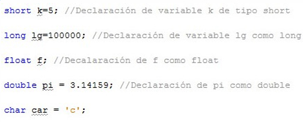
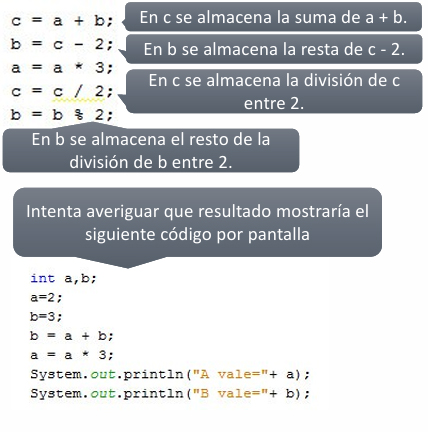

UD2 - Sintaxis Básica en Java
Tipos de datos primitivos, constantes, operadores, operaciones abreviadas y comentarios.
2.1. Tipos de datos primitivos
Java define ocho tipos de datos primitivos agrupados en cuatro categorías:
| Categoría | Tipos | Descripción |
|---|---|---|
| Enteros | byte, short, int, long |
Números enteros positivos y negativos |
| Punto decimal | float, double |
Números con precisión fraccional |
| Caracteres | char |
Símbolos de un conjunto de caracteres (letras, números...) |
| Booleanos | boolean |
Valores lógicos: true o false |
2.2. Variables
2.2.1 Declaración
La sintaxis para declarar una variable es:
tipo nombreVariable [= valor];
tipo— uno de los tipos primitivos de Java:int,double,char...nombreVariable— el nombre que le damos a la variable= valor— opcional; si se indica, es el valor inicial de la variable
2.2.2 Ejemplos de declaración
int edad = 19; // Variable entera con valor inicial
int altura; // Variable entera sin valor inicial
int var1, var2, var3; // Múltiples variables del mismo tipo en una línea
Ámbito de una variable
Las variables declaradas dentro de unas llaves {} (un bloque) solo son visibles y existen dentro de ese bloque. Se suelen declarar al principio del método donde se van a utilizar.
Ejemplo:

2.3. Constantes
Las constantes son variables cuyo valor no cambia nunca durante la ejecución del programa.
static final tipo NOMBRE_CONSTANTE = valor;
final— impide que el valor cambie (equivalente aconsten C/C++)static— la constante pertenece a la clase, no a cada objeto- Por convención, los nombres de constantes se escriben en MAYÚSCULAS
2.3.1 Ejemplos
static final double PI = 3.14159;
static final int DIAS_SEMANA = 7;
2.4. Secuencias de escape
Algunos caracteres no se pueden escribir directamente en una cadena. Java proporciona secuencias de escape combinando \ con un carácter:
| Secuencia | Descripción |
|---|---|
\t |
Inserta un tabulador |
\b |
Retroceder un espacio (backspace) |
\n |
Inserta una nueva línea |
\r |
Inserta un retorno de carro |
\f |
Inserta un salto de página |
\' |
Inserta una comilla simple |
\" |
Inserta una comilla doble |
\\ |
Inserta una barra invertida |
2.4.1 Ejemplo
System.out.println("Primera línea\nSegunda línea");
System.out.println("Nombre:\tAna");
System.out.println("Dice: \"Hola\"");
Salida:
Primera línea
Segunda línea
Nombre: Ana
Dice: "Hola"
2.5. Operadores aritméticos
En Java podemos realizar operaciones matemáticas, para ello el lenguaje nos proporciona los siguientes operadores: + (suma), - (resta), * (multiplicación), / (división) y % (resto de la división).
| Operador | Operación | Ejemplo |
|---|---|---|
+ |
Suma | var1 + var2 |
- |
Resta | var1 - var2 |
* |
Multiplicación | var1 * var2 |
/ |
División | var1 / var2 |
% |
Resto de la división | var1 % var2 |
2.5.1 Ejemplo
int a = 10, b = 3;
System.out.println(a + b); // 13
System.out.println(a - b); // 7
System.out.println(a * b); // 30
System.out.println(a / b); // 3 (división entera)
System.out.println(a % b); // 1 (resto)

2.6. Operadores de incremento y decremento
Permiten aumentar o reducir en una unidad el valor de una variable:
| Operador | Nombre | Efecto |
|---|---|---|
var++ |
Postincremento | Usa el valor y luego incrementa |
++var |
Preincremento | Primero incrementa y luego usa el valor |
var-- |
Postdecremento | Usa el valor y luego decrementa |
--var |
Predecremento | Primero decrementa y luego usa el valor |
2.6.1 Diferencia entre pre y post
int b = 3;
int a = b++; // a = 3, b = 4 → primero asigna, luego incrementa
int b = 3;
int a = ++b; // a = 4, b = 4 → primero incrementa, luego asigna
int b = 3;
int a = b--; // a = 3, b = 2 → primero asigna, luego decrementa
int b = 3;
int a = --b; // a = 2, b = 2 → primero decrementa, luego asigna
Cuidado con pre/post en asignaciones
var++ y ++var tienen el mismo efecto cuando se usan solos en una línea. La diferencia aparece cuando forman parte de una expresión como a = b++.
2.7. Operaciones abreviadas
Cuando una variable aparece a ambos lados de una operación, se puede usar notación abreviada:
// Estas dos líneas son equivalentes:
a = a * 3;
a *= 3;
Sintaxis general:
var1 op= var2; // equivale a: var1 = var1 op var2;
| Abreviada | Equivale a |
|---|---|
a += b |
a = a + b |
a -= b |
a = a - b |
a *= b |
a = a * b |
a /= b |
a = a / b |
a %= b |
a = a % b |
2.7.1 Ejemplo
int a = 10;
a += 5; // a = 15
a -= 3; // a = 12
a *= 2; // a = 24
a /= 4; // a = 6
a %= 4; // a = 2
2.8. Comentarios
Los comentarios son bloques de texto que el compilador ignora. Se usan para documentar el código.
Comentario de una línea
// Esto es un comentario de una línea
int edad = 20; // También puede ir al final de una línea de código
Comentario multilínea
/*
Esto es un comentario
que ocupa varias líneas.
El compilador ignora todo lo que hay entre /* y */
*/
int altura = 175;
Buena práctica
Comenta el por qué de tu código, no el qué. El código ya dice qué hace; los comentarios deben explicar la razón o el contexto.
Resumen de la unidad
| Concepto | Ejemplo |
|---|---|
| Variable entera | int edad = 20; |
| Constante | static final double PI = 3.14159; |
| Salto de línea | "\n" |
| Resto de división | 10 % 3 → 1 |
| Postincremento | a = b++ → asigna primero |
| Preincremento | a = ++b → incrementa primero |
| Op. abreviada | a *= 2 → a = a * 2 |
| Comentario línea | // texto |
| Comentario bloque | /* texto */ |